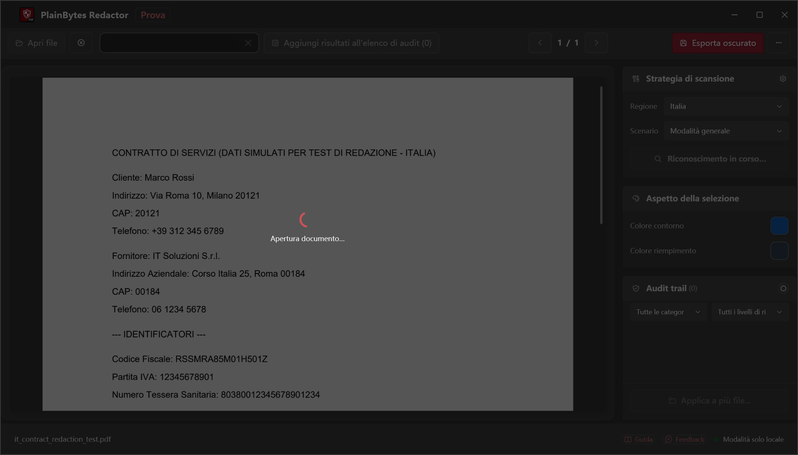
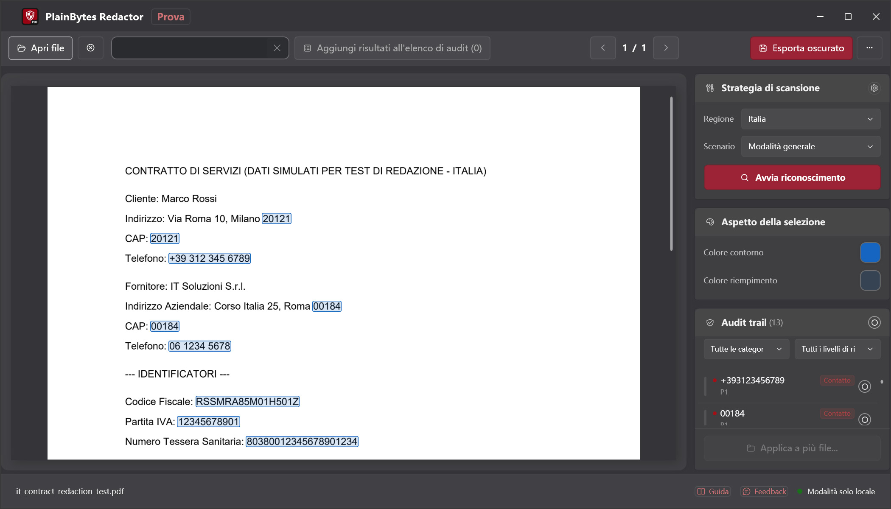
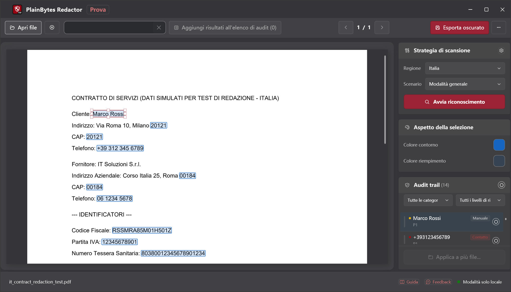
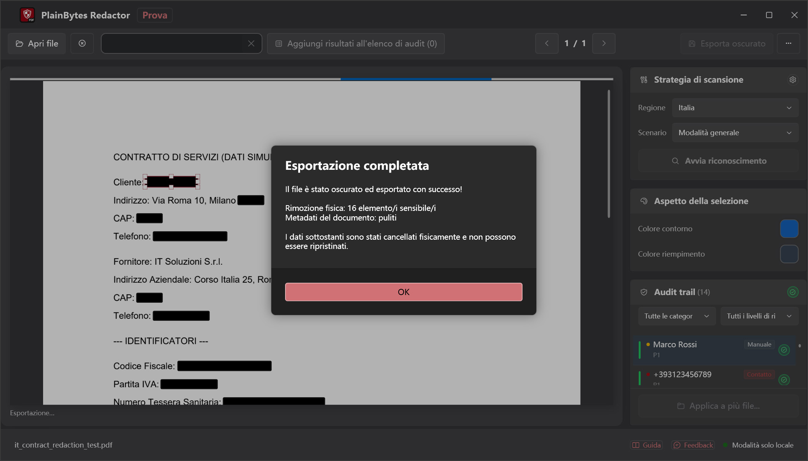

01
Apri e analizza
Carica un PDF ed esegui il rilevamento per i formati della tua regione.
PlainBytes Redactor
PlainBytes Redactor funziona interamente sul tuo computer — nessun upload cloud, nessun servizio IA vede i tuoi file. Rilevamento automatico per formati di identificatori di 28 paesi, più revisione manuale prima dell'export.
Prova gratuita 10 giorni · Acquisto una tantum · Nessun abbonamento
Come funziona

Carica un PDF ed esegui il rilevamento per i formati della tua regione.

Visualizza ogni elemento segnalato con la relativa categoria di rischio.

Aggiungi, rimuovi o perfeziona prima di finalizzare.

Contenuto e metadati rimossi in modo permanente.
La maggior parte degli strumenti di redazione — soprattutto quelli basati su IA — carica i documenti su un server prima di trovare e rimuovere le informazioni sensibili. Per chi è vincolato da riservatezza, privilegio o indipendenza di audit, non dovrebbe essere un rischio necessario solo per redigere un file.
PlainBytes Redactor esegue rilevamento ed elaborazione sul tuo dispositivo. I file non lasciano mai il computer — nessun account, sync o server.
Conformità
Architettura local-first allineata ai principali framework di protezione dei dati — nessun trasferimento a terze parti durante l'elaborazione.
Supporta l'articolo 17 del GDPR (diritto alla cancellazione). I dati personali vengono rimossi in modo permanente dal content stream del PDF — nessun trasferimento a terze parti durante l'elaborazione.
Diritto alla cancellazioneConforme allo spirito del Codice in materia di protezione dei dati personali (D.Lgs. 196/2003), supervisionato dal Garante per la protezione dei dati personali. L'elaborazione interamente locale garantisce che nessun dato personale venga trasmesso a servizi esterni non autorizzati.
Conformità GaranteLa protezione dei dati è integrata fin dalla progettazione del prodotto. L'elaborazione locale, la cancellazione fisica dei dati e l'assenza di dipendenza dal cloud corrispondono al principio di « protezione dei dati fin dalla progettazione » previsto dall'articolo 25 del GDPR.
Protezione fin dalla progettazioneNota: PlainBytes Redactor è uno strumento progettato per supportare i flussi di lavoro conformi alla protezione dei dati. Non costituisce una consulenza legale e non è stata ottenuta alcuna certificazione formale da parte di terzi.
Per avvocati
Oscura SSN, dati finanziari e altri PII prima di e-filing o condivisione discovery, senza passare i file dei clienti per cloud di terze parti.
Per commercialisti
Oscura numeri di conto, SSN e dettagli finanziari dei clienti prima di condividere working paper di audit, dichiarazioni fiscali o report di fine anno — senza passare i dati dei clienti per cloud di terze parti.
Per team HR
Oscura cifre salariali, SSN e dati personali prima di condividere lettere di offerta, registri di cessazione o fascicoli del personale con revisori, consulenti legali o in risposta a richieste di dati.